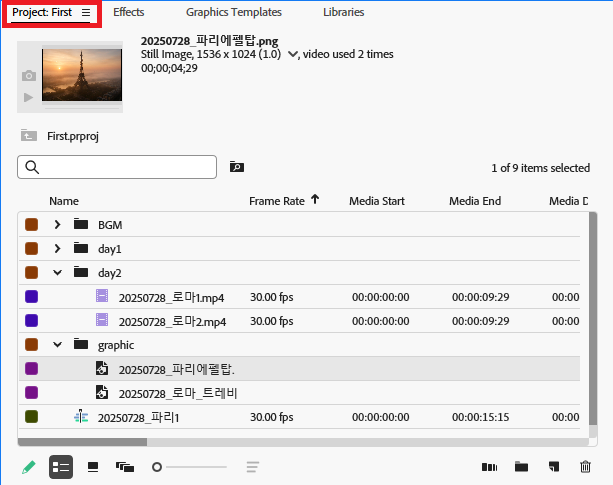
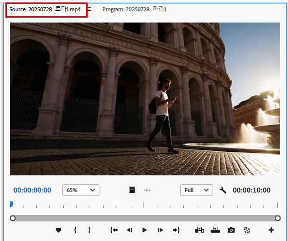
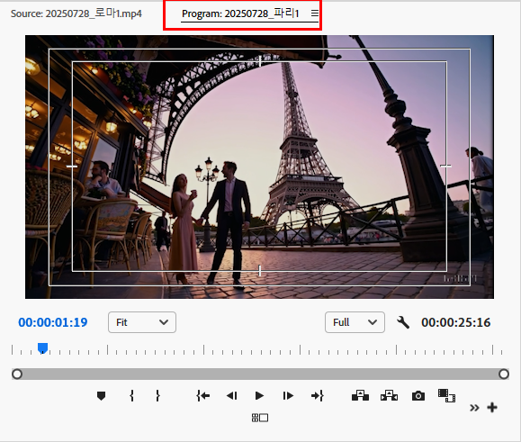
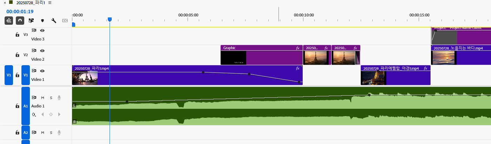
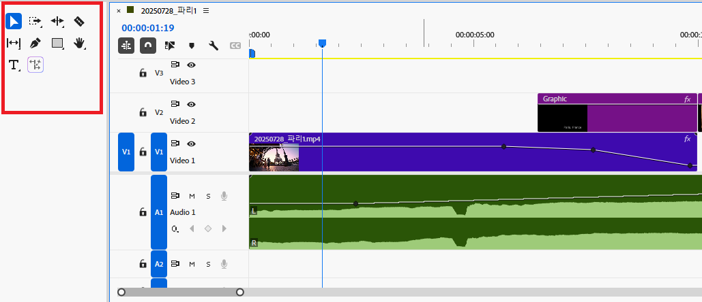
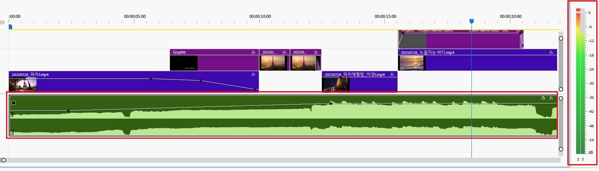
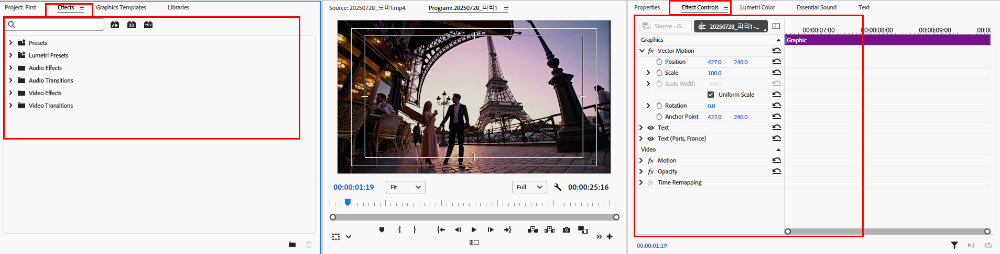
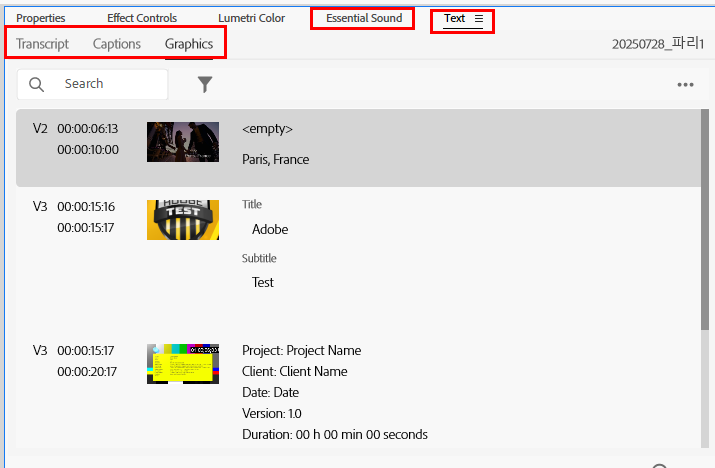

영상 편집에 필요한 모든 재료(영상, 이미지, 오디오 파일 등)를 불러와 보관하고 관리하는 '총괄 창고'입니다.
설정 예제: "유럽 여행 브이로그" 프로젝트 정리하기
프로젝트 패널 하단의 폴더 아이콘(New Bin)으로 `Day 1 - 파리`, `Day 2 - 로마`, `BGM` 이름의 Bin을 만들고, 각 폴더에 맞는 소스 파일들을 드래그하여 정리합니다.
타임라인에 올리기 전, 원본 클립을 미리 보고 사용할 구간을 정밀하게 잘라내는 '재료 손질대'입니다.
설정 예제: "에펠탑 야경" 하이라이트 구간 선택하기
에펠탑 영상 클립을 소스 모니터에서 열고, 조명이 가장 화려하게 반짝이는 부분의 시작 지점에서 `I` 키, 끝나는 지점에서 `O` 키를 눌러 하이라이트 구간만 선택합니다.
타임라인에서 편집 중인 최종 결과물을 실시간으로 보여주는 '메인 스크린'입니다.
설정 예제: 자막 위치 안전하게 조정하기
프로그램 모니터의 렌치 아이콘을 클릭하여 '안전 여백'을 활성화하고, 화면의 사각형 테두리 안쪽으로 자막이나 로고를 배치하여 TV 등에서 잘리지 않도록 합니다.
영상 클립, 오디오, 자막 등을 시간 순서대로 조립하고 편집하는 '메인 작업대'입니다. 이곳에서 모든 편집 작업이 이루어집니다.
설정 예제: 컷 편집으로 영화 예고편 리듬감 만들기
액션 장면들을 1~2초 내외의 매우 짧은 길이로 잘라 타임라인에 빠르게 연속으로 배치하여 숨 쉴 틈 없는 긴박감과 속도감을 연출합니다.
선택, 자르기, 텍스트 입력 등 타임라인에서 사용할 각종 편집 도구들이 모여있는 '연장통'입니다.
설정 예제: '자르기 도구'와 '선택 도구'로 컷 편집하기
'자르기 도구(단축키 C)'로 클립의 불필요한 부분을 자른 뒤, '선택 도구(단축키 V)'로 잘려나간 빈 공간을 클릭하고 `Delete` 키를 눌러 간격을 없애는 '잔물결 삭제'를 실행합니다.
영상의 오디오 볼륨 크기를 실시간으로 보여주는 '레벨 게이지'입니다. 소리가 너무 크거나 작지 않은지 확인할 수 있습니다.
설정 예제: 오디오 피크(Peak) 방지하기
영상을 재생하며 오디오 미터의 막대가 빨간색으로 표시되는 0dB을 넘지 않도록 오디오 클립의 볼륨을 조절합니다. 일반적으로 -6dB ~ -12dB 사이를 유지하는 것이 좋습니다.
효과 패널은 비디오 전환(디졸브, 밀어내기 등)이나 각종 시각/청각 효과들이 모여있는 '효과 보관함'이며, 효과 컨트롤 패널은 클립에 적용된 효과의 세부 속성을 조절하는 '조정실'입니다.
설정 예제: 화면 확대/축소(Scale) 애니메이션 만들기
타임라인의 클립을 선택하고 '효과 컨트롤' 패널로 이동합니다. '동작(Motion)' > '비율(Scale)' 항목 옆의 스톱워치 아이콘을 클릭하여 키프레임 애니메이션을 활성화하고, 시간의 흐름에 따라 비율 값을 변경하여 화면이 점점 확대되는 효과를 만듭니다.
복잡한 오디오/그래픽 효과를 초보자도 쉽게 다룰 수 있도록 만든 '간편 조정 패널'입니다. 클릭 몇 번으로 전문적인 효과를 적용할 수 있습니다.
설정 예제: '기본 사운드'로 인터뷰 목소리 선명하게 만들기
인터뷰 오디오 클립을 선택하고 '기본 사운드' 패널에서 '대화(Dialogue)'를 클릭합니다. '선명도(Clarity)' > '선명도' 체크박스를 활성화하고 '자동 일치'를 눌러 목소리를 또렷하고 듣기 좋게 만듭니다.